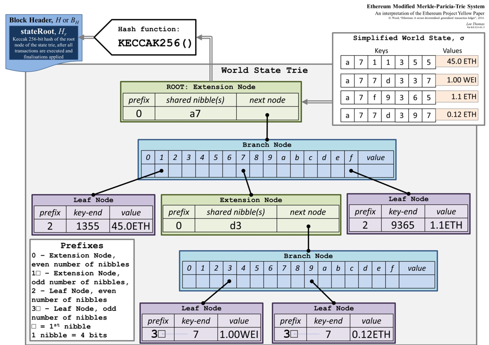

The Block and transaction data of Simplechain are ultimately stored in Level DB In the database. Level DB A database is a key-value database. key is generally related to hash, while value is the RLP encoding for storing content.
KV storage LevelDB
Trigg tree
Merkle Patricia Trie is a prefix tree that uses hash to index data.
Macroscopically speaking, the triggtree is a prefix tree that uses key to query the value. To query the value by using the key is to use the key to index on the Modbus tree. After passing through multiple intermediate nodes, it finally reaches the leaf node where the data is stored.
In terms of details, the triggtree is a Merkle tree. The index of each node on each tree is the hash value of this node. When using the key to search for a value, the hash value of the next node to be redirected and the hash value of the next node are obtained based on the fact that the key is within a certain node, you can retrieve the data of the next node from the underlying database, and then use the key to query the hash value of the next node in the next node until the leaf node where the value is located is reached.
When the data of a leaf node on the Modbus tree is updated, the hash of the leaf node will also be updated, the hash of all intermediate nodes traced back to the root node by this leaf node is updated. Finally, the hash of the root node of the profiler is also updated. When you want to index this new data, use the new root node hash of profiler to find a new root node from the underlying database, and then traverse it layer by layer to finally find the new data. If you want to query historical data, you can use the old root hash to retrieve the old root node from the underlying database and traverse it down to query historical data.
The implementation diagram of triggtree (the picture is from the Yellow Book of Ethereum)

Account State
On Simplechain, data is stored in account units. In each account, data such as the code, parameters, and nonce of the contract (user) are stored. The data of the account is indexed by the address of the account.
As the account data changes, the hash of the account also changes. At the same time, the hash of the root of profiler also changes. When the account data is different, the root of the corresponding profiler is different. Here, Ethereum concretizes this layer of meaning and puts forward the concept of "state. Call the hash of triggroot as state root. Different state root, corresponding to different "states", corresponding to the query of different Modbus root nodes, then, use the account address to query the account data in this status from the root node of different profiles. Different states may result in different amount of account queries, because the root node of the modifier is different.
state root is a field in a block, and each block corresponds to a different "state". Transactions in the block operate on the account to change the data in the account. account data varies in different blocks, that is, the state of this block is different, specifically, the state root is different. Take the state root of the block from a certain block and query the root node of the profiler, then the data History of the account in the block can be indexed.

二、索引存储StormDB
StormDB(a simple and powerful toolkit for BoltDB)是一种基于boltDB实现的数据库，它支持索引与搜索查询，相对于传统关系数据库MySQL、Oracle等，StormDB使用单一文件存储，没有单独的服务，更加轻量便于系统移植，SImplechain使用它来存储跨链交易。
名词解释
Bucket
Storage unit of a custom object
Id
The primary key index of the stored object. The index is unique and cannot be duplicated.
Index
Sort indexes. Currently, only numeric fields (int8, int16, int32, int64, uint8, uint16, uint32, uint64) are supported, other types are sorted by byte comparison after encoding.
Unique
Unique hash index
Options
Query options, such as Limit, OrderBy, Skip, and so on.
Matcher
The input condition of the query. It supports Eq, Gt(greater than), Lt(less than), And, Or, Not, And Re (regular match).
Example
Take the cross-chain transaction storage structure as an example to explain the above terms.
type CrossTransactionIndexed struct {
PK uint64 `storm:"id,increment"`
CtxId common.Hash `storm:"unique"`
From common.Address `storm:"index"`
To common.Address `storm:"index"`
TxHash common.Hash `storm:"index"`
Price *big.Float `storm:"index"`
Status uint8 `storm:"index"`
Value *big.Int
BlockNum uint64 `storm:"index"`
BlockHash common.Hash
DestinationId *big.Int
DestinationValue *big.Int `storm:"index"`
Input []byte
V []*big.Int
R []*big.Int
S []*big.Int
}
The explanation is as follows:
- storm:"id,increment"：indicates that this field is the primary key, and increment indicates that it automatically increments when inserted.
- storm:"unique"：indicates that this field uses a non-repeatable hash index.
- storm:"index"：indicates that this field uses a sort index.
CRUD and transactions
Insert object
user := User{
ID: 10,
Group: "staff",
Email: "john@provider.com",
Name: "John",
Age: 21,
CreatedAt: time.Now(),
}
err := db.Save(&user)
// err == nil
user.ID++
err = db.Save(&user)
// err == storm.ErrAlreadyExists
update object
// Update multiple fields
err := db.Update(&User{ID: 10, Name: "Jack", Age: 45})
// Update a single field
err := db.UpdateField(&User{ID: 10}, "Age", 0)
Delete object
err := db.DeleteStruct(&user)
Delete Bucket
err := db.Drop(&User)
//OR
err := db.Drop("User")
Query object
var users []User
err := db.Find("Group", "staff", &users, storm.Skip(10))
err = db.Find("Group", "staff", &users, storm.Limit(10))
err = db.Find("Group", "staff", &users, storm.Reverse())
err = db.Find("Group", "staff", &users, storm.Limit(10), storm.Skip(10), storm.Reverse())
err = db.All(&users, storm.Limit(10), storm.Skip(10), storm.Reverse())
err = db.AllByIndex("CreatedAt", &users, storm.Limit(10), storm.Skip(10), storm.Reverse())
err = db.Range("Age", 10, 21, &users, storm.Limit(10), storm.Skip(10), storm.Reverse())
Conditional query
query := db.Select(q.Gte("Age", 7), q.Lte("Age", 77))
var users []User
err = query.Find(&users)
Use transactions
tx, err := db.Begin(true)
if err != nil {
return err
}
defer tx.Rollback()
accountA.Amount -= 100
accountB.Amount += 100
err = tx.Save(accountA)
if err != nil {
return err
}
err = tx.Save(accountB)
if err != nil {
return err
}
return tx.Commit()
Efficient memory multi-index storage
To meet different index types and efficiency requirements, stormDB alone is difficult to meet. Therefore, a multi-index structure is introduced into the memory to store data with high read/write frequency.
Hash index
The hash indexes used in Simplechain are all hash indexes with unique key values, so map is directly used for storage.
Insert and update
idx := make(map[Key]Value)
idx[key]=value
Delete
delete(idx,key)
Read
if v,ok := idx[key]; ok {//...}
Sort index
Simplechain uses red and black trees as sorting indexes to store any data type with sequence requirements.
Initialization
redblacktree.NewWith(container.UInt64Comparator, true)
Insert and update
idx.Put(key,value)
Query
itr := idx.Get(key)
Delete key
idx.Remove(key)
Delete a specific object
for it:=idx.LowerBound(key); it!=idx.UpperBound(key); it.Next() {
if ... {
idx.RemoveOne(itr)
break
}
}